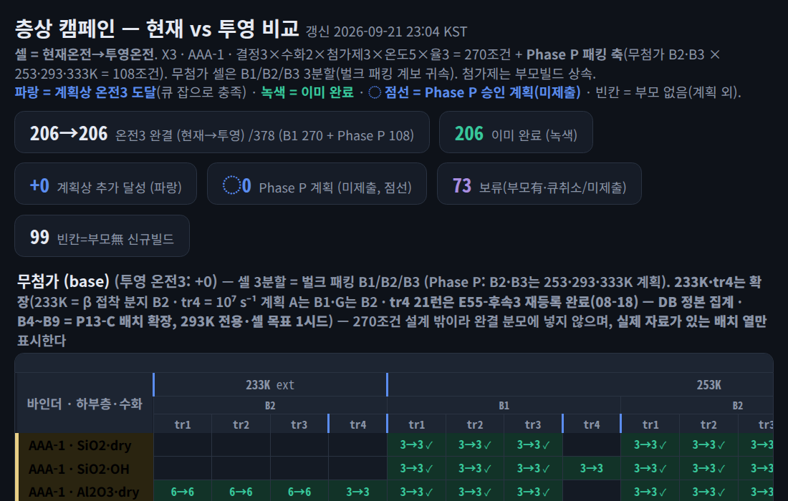

전단 런에서 체적탄성 발산 55건(최대 6.8×10²⁷ GPa) · CED 음수 57건 — 부피 요동 없는 런에서 무조건 계산
2026-07-03 = 코드베이스 검토 보고서 · 2026-09-22 = asphalt_agent.db 읽기 전용 조회 (MD 계산 결과 행 수)
13-S2
작업 큐와 모니터링
10분 · 실패 복구형 실행 구조 · GPU 스케줄링 · 운영 사고 기록
13-S2 · JOB QUEUE
작업 상태와 대시보드
COMID
iteration 07
al_iter07_cand03running
al_iter07_cand04queued
gnn_retrain_v07building
al_iter06_cand08failed
13-S2 · SCHEDULING
GPU 스케줄링 구조: 큐 3종 · 워커 풀 3종 · 원자적 슬롯 배정
원자적 배정
전역 파일 잠금 + 단일 DB 트랜잭션 → 슬롯 1개 = 작업 1개 · 중복 배정 없음
MPS · UUID
MPS(Multi-Process Service)로 GPU당 다중 슬롯 · 하드웨어 UUID(장치 고유 식별자) 경로 · 32 GB 미만 GPU 제외
실패 정책
overlap 계열 → 시드 변경 · 압력 · 에너지 발산 → 시간 간격(timestep) 축소
13-S2 · LIVE · THROUGHPUT
GPU당 동시 작업 수 ↔ 처리율 · 전력 (H200 × 6 실측)
GPU당 작업 수6.0 잡/GPU · 총 36잡
잡당 속도 · 모형
— steps/s
GPU당 · 6 GPU 합계
— · — steps/s
tr1 4.1 M step 완주
—
총 GPU 전력 · 실측 구간
—
빨간 원 = 체제 실측 · 빨간 네모 = 08-17 검증점 · 녹색 삼각 = 09-19 NUMA(비균일 메모리 접근)별 MPS · 조기 해제 체제 · 점선 = 모형 s(n) = 119 / (1 + n / 3.29) · 전력 임계 정상 1,500 W · 안전 1,300 W
13-S2 · LIVE · QUEUE
작업 큐 상태 전이 시뮬레이션: 슬롯 · 통과율 · 조기 해제
GPU 슬롯 점유 (색 = 상태)
경과 틱 · 완료
0 · 0 / 60
재시도 누계
0
슬롯 사용률
—
처리량
—
통과율 91.5 % = DB 실측(재시도 없이 완료된 실험 5,302 / 5,793) · 단계별 틱 · 재시도 상한 3회 = 설명용 가정값
13-S2 · DASHBOARD
캠페인 대시보드: 378조건 중 완결 206

분모 378조건
B1 설계 270 (결정 3 × 수화 2 × 첨가제 3 × 온도 5 × 율 3) + Phase P 패킹 축 108
현황 · 2026-09-21
완결(온전 3시드) 206 · 보류 73 · 부모 없음 99
셀 표기
현재 온전 → 투영 온전 · 녹색 = 완료 · 파랑 = 큐 작업으로 도달 예정 · 점선 = 승인 계획
가드
DB 정본 집계 · ML · 대시보드 세대 중복 방지(E43)
화면 원본: scripts/dashboard/work/proj_dashboard.html (2026-09-21 23:04 KST) · 어두운 테마 · 확대 캡처
13-S2 · INCIDENTS · 1 / 2
운영 사고 기록 (1/2): 실패 유형별 처리 규칙
실패 증상
원인
처리
기록
PPPM(장거리 정전기 계산) out of range
인장 시 z-진공 부족
진공 확대: X1 60 Å · X3 80 Å 표준
E08
overlap 「Bond atoms missing」
패킹 접촉
시드 변경 재시도
E17
Packmol 결정론 실패
목표 밀도 패킹 한계
조합 제외 검토 · 시드 재시도 무효
E09
flying ice cube
서모스탯의 질량중심 병진 가열
fix momentum 근본 수정
E38
NVIDIA 드라이버 교착
드라이버 교착 → 연쇄 동결
수동 재부팅 · 3계열 복구 · 전력 임계 배포 수정
E49
규칙
실패 유형별 개별 처리 · 결정론 실패에 시드 재시도 금지(GPU 소모) · 한계선상 조합만 단계적 조정
재시도 분포 · DB 2026-09-22
0회 5,302 (91.5 %) · 1회 222 · 2회 89 · 3회 124 · 4회 이상 56
13-S2 · INCIDENTS · 2 / 2
운영 사고 기록 (2/2): 스케줄러 · 큐 사고와 처리
사고
증상
처리
E10 스케줄러 부모 기아
ready 부모 23 → 108건이 33시간 동안 진입 0건
공급 엣지 98건 보류(held_parent_drain) → 2분 뒤 부모 5건 진입 · 시간당 약 25건
E05 분기 디렉토리 오염
인장률 3종의 피크 응력이 12자리까지 동일
분기별 작업 디렉토리 격리 + Redis 잔여 메시지 삭제
E02 큐풀 자기잠금
503 뒤 재제출이 영구 실패(스텁 충돌)
스텁 삭제 · 제출 전 용량 확인(제출 1건 = 실험 4행)
E12 코호트 동기화
대량 재시도분 동시 출발 · 약 2시간 뒤 동시 완료 → 90분 감시 오탐
감시 지평 ≥ 코호트 주기(2 h) · 「회전 없음」 vs 「경쟁 패배」 구분
교훈 4 · 우선순위 역전
정렬 규칙 + 완료 훅 + 공급자 3개 동시 작용 → 소비자(디스패처) 대신 공급자(엣지) 제어로 해결
교훈 3 · 배포
코드 수정 배포 시 Redis 잔여 메시지 삭제 필수 — 구코드 작업의 재기동 후 실행 방지